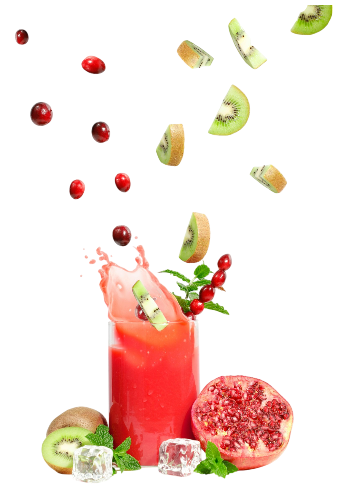
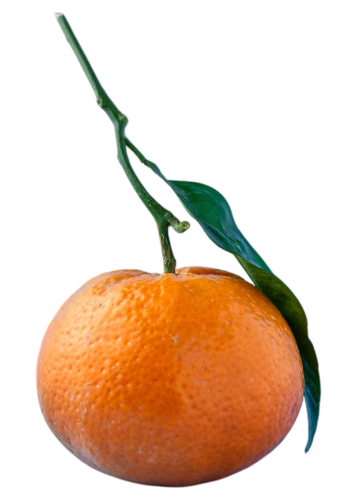
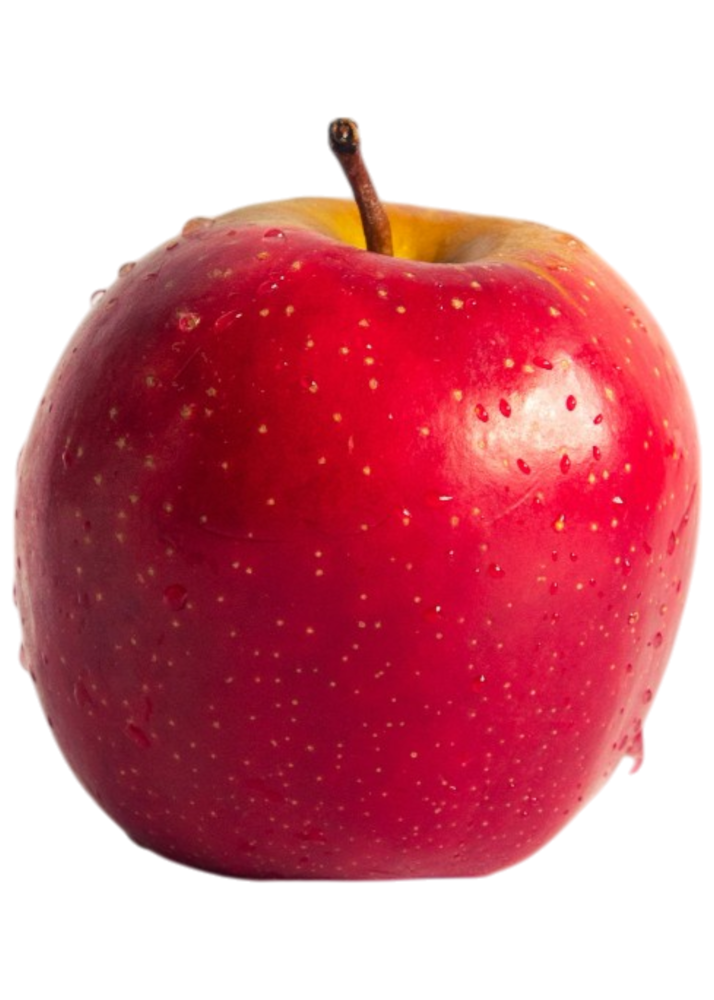
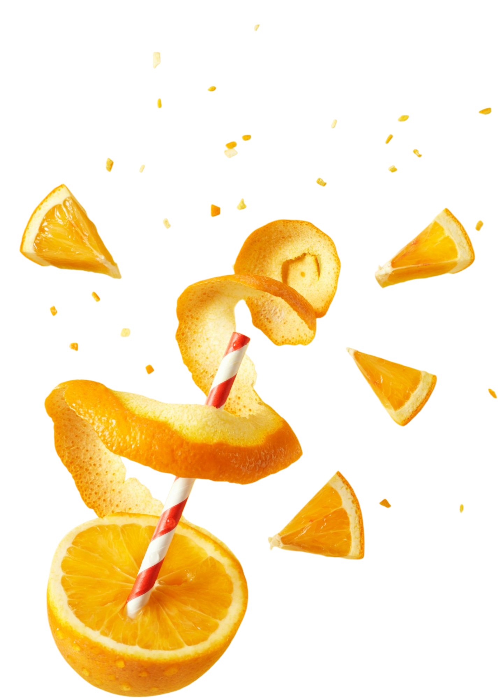
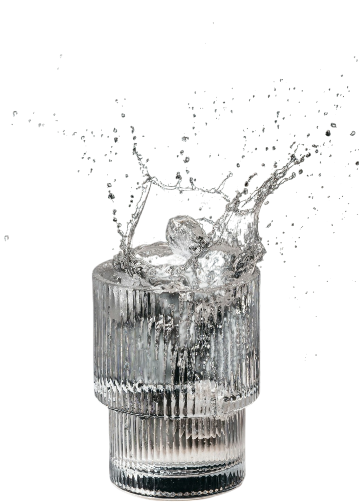
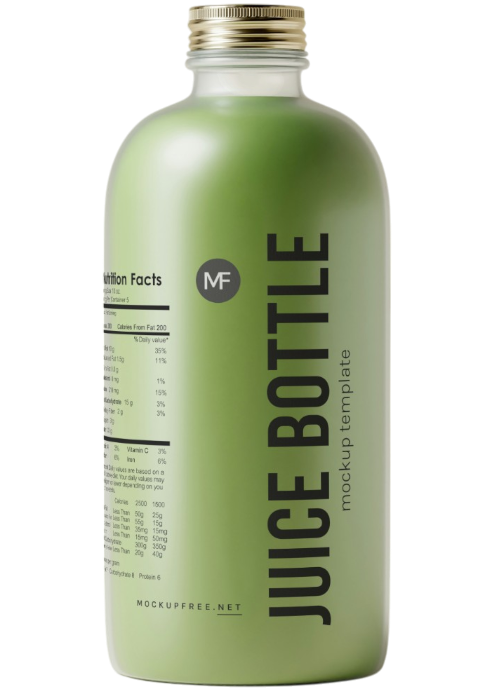

Fresh Energy
for Every Day.
Nikmati kesegaran alami dari jus buah pilihan.
Dibuat khusus untuk remaja aktif dan penuh semangat.

About Us
Kami percaya bahwa kesegaran alami adalah kunci hidup yang lebih sehat. Kedai Jus kami hadir sebagai solusi bagi kamu yang ingin menikmati minuman lezat tanpa kompromi terhadap kesehatan. Berawal dari keinginan untuk menghadirkan produk yang jujur dan berkualitas, kami hanya menggunakan buah-buahan pilihan tanpa tambahan pemanis buatan, pewarna, atau pengawet. Dengan kombinasi teknologi penyimpanan dingin dan bahan organik, kami memastikan setiap tetes jus yang kamu minum mengandung vitamin dan enzim segar, seperti baru dipetik dari kebun. Tidak hanya menyegarkan, jus kami juga dikemas dalam botol ramah lingkungan sebagai bentuk komitmen terhadap keberlanjutan bumi.
Kami tidak sekadar menjual jus.
Kami mengajakmu bergabung dalam gaya hidup sehat dan bertanggung
jawab.
Dari anak-anak sekolah, pekerja kantoran, hingga lansia,
kami ingin semua orang bisa menikmati kebaikan buah
setiap hari dengan cara yang praktis dan menyenangkan.
Varian Rasa Buah


Kaya Akan Vitamin C

Sensasi Dingin Maksimal

Botol Ramah Lingkungan
